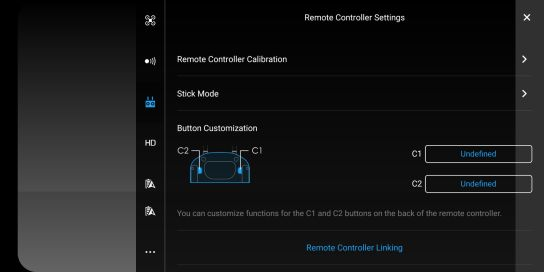
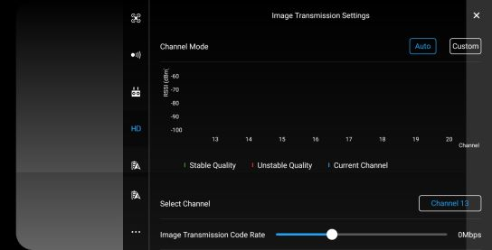
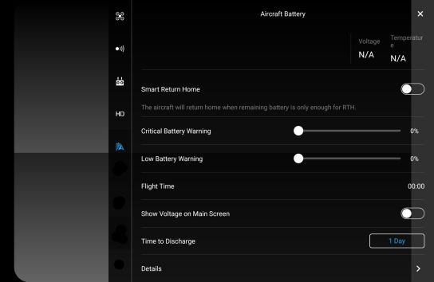
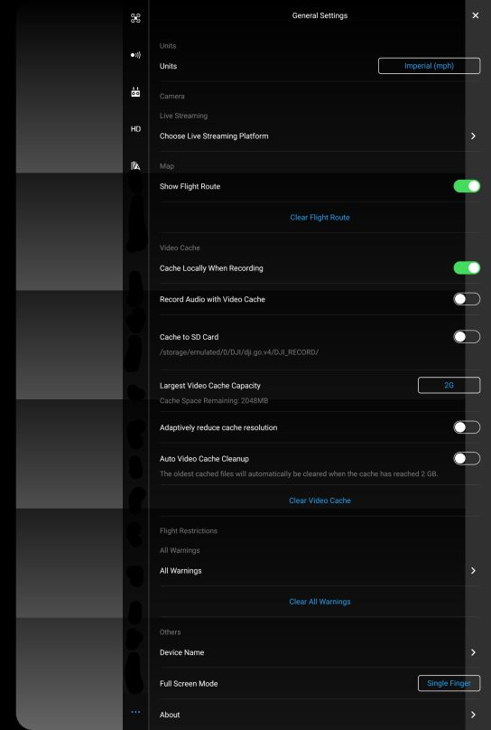

General UAS Settings
Main Control (MC) Settings

The main control settings tab allows the user to modify a number of basic settings such as

- Return-to-Home Altitude
- Beginner Mode
- Maximum Altitude
- Distance Limit
with more advanced settings found at the bottom of the page.
Advanced Settings

The Advanced Settings page allows us access to a few different aircraft sensitivity settings.
- EXP

Tuning the EXP settings allows you to increase/decrease stick input sensitivity. The X-axis indicates user stick input and the Y-axis represents the “value” being output to the motors from these stick inputs. The higher the value, the more sensitive the drone can be towards the input stick movement. This is not to be confused with the next setting below.
- Sensitivity

The sensitivity setting affects how rapidly the drone will respond to the input. A higher value would cause the drone to react more aggressively while a lower value would dull out that same input.
- Gain

Generally, the gain settings are left alone.
General comment for myself, try and get a drone to checkout some of these functions before you can specifically state what it is that they do. There are some contradicting pieces of information found on the “Gain” settings and I don’t want to give the wrong words of advice for something that can be sensitive to errors.
Visual Navigation Settings

Here we can toggle the Obstacle avoidance on and off, as well as the Radar Chart that displays real time obstacle detection. At the bottom we can again find Advanced Settings that pertain to the systems Visual navigation.
Advanced Settings

The Advanced Settings for the Visual Navigation Settings allow for the enabling/disabling of both the Downward vision positioning system and the return-to-home obstacle detection feature.
Remote Controller Settings

- Remote Controller Calibration
- Stick Mode
- Button Customization
- Remote Controller Linking
Image Transmission Settings

- Channel Mode
- Channel selection
- Image Transmission Code Rate
Aircraft battery Settings
 1. Smart Return Home (RTH) 2. Critical Battery Warning 3. Low Battery Warning 4. Flight Time (on battery) 5. Show Voltage on Main Screen 6. Time to Discharge 7. Battery Details
Miscellaneous Settings
The three dots found at the bottom of our settings page allows us access to a variety of miscellaneous settings.Here we can modify things like which units (imperial/metric) are being displayed, live streaming settings, cache settings and more.

- Units (Imperial / Metric) - Allows you to switch the speed/distance information between MPH and KMPH.
- Choose Live Streaming Platform - Currently you can choose between facebook live, YouTube or even a custom RTMP server for your livestream.
- Show Flight Route / Clear flight route - This allows you to toggle between showing a flight route map or even clearing the current flight route indicators.
- Cache Locally When Recording -
- Record Audio with Video Cache
- Cache to SD Card
- Largest Video Cache Capacity
- Adaptively reduce cache resolution
- Auto Video Cache Cleanup
- Flight Restriction Warnings
- Device Name
- Full Screen Mode
- About